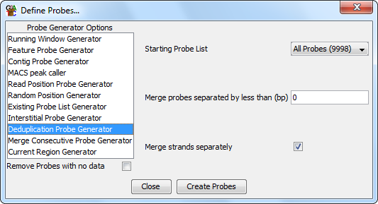

Interstitial probe generator
The deduplication probe generator is a way to merge closely
positioned or overlapping probes together to reduce the complexity
of a probe set.

Options
- The starting probe list. This is the set of probes which will
be merged to form the new probe set
- The maximum distance over which probes will be merged. If set
to zero then only overlapping probes will be merged
- Whether to merge strands separately. If selected then only probes
with the same strand setting will be merged. If this is not set then
any probes will be merged and merged probes will only retain a
direction if all of the probes in the set had the same direction.